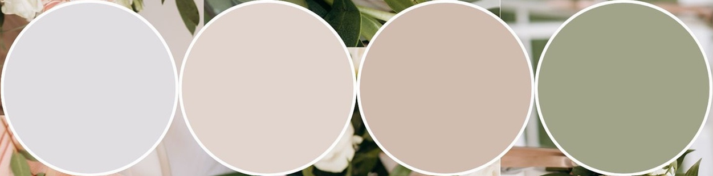

Doplňující otázky
Čím nás můžete obdarovat?
Nejcennějším darem pro nás bude, když s námi prožijete tento výjimečný den.
Kromě toho samozřejmě budeme rádi za jakýkoli finanční dar, který nám pomůže pokrýt náklady
spojené se svatbou.
Jak se mohu obléknout, abych dobře zapadnul/a?
Pokud budete chtít dokonale zapadnout, celá výzdoba bude laděná do světlých pastelových barev.
Bílou barvu prosíme nechte nevěstě. :)
Protože srpen bývá obvykle teplý a podle Dejvovy předpovědi prý déšť nehrozí, můžete po obřadu vyměnit slavnostní outfit za něco pohodlnějšího.
Protože srpen bývá obvykle teplý a podle Dejvovy předpovědi prý déšť nehrozí, můžete po obřadu vyměnit slavnostní outfit za něco pohodlnějšího.

V jaký čas máme dorazit na místo?
Doporučujeme přijet nejpozději 30 minut před začátkem obřadu, tedy 11:30 - 12:00.
Je na místě možné zaparkovat?
Ano, na obrázku níže je vyznačená plocha k parkování včetně příjezdové trasy.
Auta a motocykly je možné na parkovišti nechat přes noc za zavřenou bránou. Abyste si s námi mohli
celý den patřičně užít, bude možné si auta vyzvednout v neděli kdykoli do 12:00.

Jaké jsou další možnosti dopravy?
Ze stanice metra C – Letňany jede přímý autobus na zastávku Vinořský zámek 9 minut.
Dalšími možnostmi je spoj ze stanice metra B – Rajská zahrada, případně lze využít i vlak do stanice
Praha-Kbely a poté autobus. Samozřejmě je možné k dopravě na svatbu i z ní využít Bolt / Uber.
Je zajištěno ubytování?
Ubytování na místě bohužel k dispozici není, dobrodruzi si však mohou
v omezeném počtu po předchozí domluvě postavit stan na zahradě. Pokud jste z daleka a měli
byste o ubytování zájem, kontaktujte nás prosím a určitě spolu nějaké řešení vymyslíme.